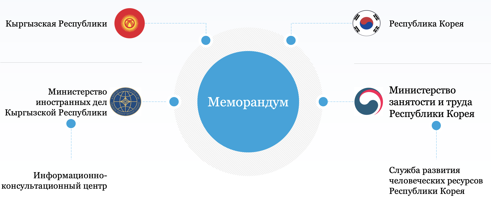

Республика Корея
Для въезжающих граждан КР в Республику Корея, требований въезда и правилам пребывания.
Куда можно обратиться гражданам Кыргызской Республики в Республике Корея за получением бесплатной правовой помощи и консультации?
В Посольство Кыргызской Республики в Республике Корея:
Адрес:
Йонгсан-гу, Собингго-ро 91 лагиль 16-10 (Донгбингго-донг 28-17), Сеул, Республика Корея
Время работы:
Понедельник – Пятница с 9:00 до 18:00
Перерыв с 12:30 до 13:30
Контакты:
Тел: +82-2-379-0952
Факс: +82-2-379-0953
Email: kgembassy.kr@mfa.gov.kg
Консульский отдел:
Понедельник – Пятница с 9:00 до 12:00
Тел: +82-2-379-0951
Факс: +82-2-379-0953
Email: kyrgyzconsulkorea@gmail.com
Телефонный номер горячей линии Посольства: +82 10-6891-2707 (WhatsApp)
Сайт: https://mfa.gov.kg/ru/dm/posolstvo-kyrgyzskoy-respubliki-v-respublike-koreya
Телефон доверия: +82-2-379-0952
Контакты специалистов по предвыездной подготовке в трудовую миграцию:
Центр трудоустройства граждан за рубежом при МТСОМ KP
Адрес: г. Бишкек, ул. Токтогула 237/ М. Гвардия
Номер горячей линии: 0800-0000-189 (звонок со всех регионов Республики бесплатный);
Короткий номер со стационарного телефона:1899 (только г. Бишкек)
WhatsApp номер: +996 559 18-99-00
Телефон доверия: +996 312 64-13-42
Сайт: migrant.kg
КАК ДОЕХАТЬ ДО ПОСОЛЬСТВА?
Адрес: Seoul Yongsan-gu Dongbinggo-dong 28-17 (서울 용산구 동빙고동 28-17)
Метро: Станция Noksapyong (녹사평역), светлая оранжевая линия №6, выход № 4.
Затем направиться к остановке «Noksapyongyok» которая находится прямо вдоль дороги (20-30м).
Городской автобус 740.
Автобус: С остановки на станции Noksapyongyok сесть на городской автобус №740. Ехать до остановки
(через одну остановку) Hangang jung hakkyo ap (한강중학교 앞), выйти и перейти дорогу.
Пройти вдоль многоэтажных домов Prugio (푸르지오) 476 метров (7 минут) и повернуть направо, где будет
висеть вывеска-табличка, указывающая нужное направление к Посольству.
Правила пересечения государственной границы Республик Корея
В самом начале, перед вылетом, проверьте срок действия паспорта, загрузите обязательное мобильное приложение «Путешествую без COVID-19», в которое вы должны загрузить данные ПЦР- теста.
Помимо этого с 21 марта 2022 года, граждане, пересекающие границу Республики Корея, вне независимости от того, вакцинированы они или нет, по рекомендации компетентных органов Республики Корея необходимо загрузить персональную информацию в информационную систему перед въездом в страну Q-код можно загрузить через специальное мобильное приложение систему Q-code Quarantine covid defense или на сайте Q-Code (для получения подробной информации и доступа к системе ссылка: Q-Code. https://cov19ent.kdca.go.kr).
Q-код желательно получить перед посадкой на рейс.
Информация, необходимая для выдачи QR-кода, включает паспортные данные гражданина, дата въезда в Республику Корея, история вакцинации, результат ПЦР-скрининга и состояние здоровья.
Для полностью вакцинированных граждан.
При пересечении границы Республики Корея граждане, предъявившие действующий сертификат о полной вакцинации против COVID-19, освобождаются от требований карантина. При этом, последняя доза должна быть введена не менее чем за 14 дней до отъезда и не более чем за 6 месяцев (180 дней). После этого в сертификате вакцины должно быть указано, что была введена бустерная вакцина. Сертификат вакцины должен быть выдан с QR-кодом. Разрешенные вакцины включают вакцины, одобренные Всемирной организацией здравоохранения (ВОЗ).
Полностью вакцинированные граждане, которые либо ввели свою информацию в систему Q-Code и получили QR-код, либо могут подтвердить свои прививки после их прибытия в международный аэропорт Инчхон могут пройти ПЦР-тест в местном центре общественного здравоохранения вместо временного стационара.
Начиная с 21 марта 2022 года, граждане могут отправляться непосредственно к месту своего жительства из Международного аэропорта Инчхон на личном автомобиле, специально отведенном такси или специально отведенном шаттле, затем необходимо направится в местный центр общественного здравоохранения для проведения ПЦР-теста в течение 24 часов после прибытия.
Начиная с 1 апреля 2022 года гражданам разрешено пользоваться общественным транспортом от аэропорта до места жительства.
Гражданин считается полностью вакцинированными, если он/она получили все необходимые дозы одобренных Всемирной организацией здравоохранения вакцин против COVID-19 по крайней мере за 14 дней до въезда и в течение 180 дней. Однако такое ограничение по времени не применяется, если они получили третью дозу вакцины.
Для не полностью вакцинированных граждан
Граждане, не прошедшие полную вакцинацию, должны следовать той же процедуре тестирования, также загрузить информацию в систему Q-Code и находиться на самоизоляции 7 дней по прибытии в утвержденное правительством жилье за 1,05 миллиона вон. Граждане Кореи и постоянные жители могут завершить период карантина в частном доме.
Перед выездом в Республику Корея обязательно проконсультируйтесь у специалистов!
Посетите специалистов в своем регионе и бесплатно проконсультируйтесь по вопросам легального пересечения границы Республики Корея, правильного заполнения миграционный карты, прохождения постановки на миграционный учет, правильного поведения с полицией, вопросам найма жилья в Корее, о возможностях трудоустройства в Республике Корея и основам защиты своих трудовых прав.
Полезные ресурсы, Сайты:
https://overseas.mofa.go.kr/kg-ky/wpge/m_9084/contents.do
ttps://www.visa.go.kr
https://mfa.gov.kg/ru/dm/posolstvo-kyrgyzskoy-respubliki-v-respublike-koreya
https://study.vseokoree.com/universitety-i-kolledzhi-v-yuzhnoj-koree
https://vseokoree.com/telefony-i-adresa/ekstrennye-sluzhby/telefony-sluzhb-ekstrennoj-pomoshhi
https://vseokoree.com/telefony-i-adresa/tsentry-gosudarstvennogo-strakhovaniya/gosudarstvennoe-medicinskoe-strahovanie-2
Вместе с тем, с мая 2022 года власти Республики Корея значительно ослабили карантинные меры, отменяется обязательное ношение масок на открытом воздухе при условии соблюдения социального дистанцирования.
Масочный режим обязателен в случае проведения общественных, спортивных и культурно-досуговых мероприятий с участием более 50 человек, а также в закрытых помещениях.
Между тем, в связи со стабилизацией ситуации в Республике Корея с распространением коронавирусной инфекции, возобновлены Международные поездки в Корею для лиц с действующим разрешением на въезд или визой. Дополнительную информацию о получении корейской визы можно найти на https://www.visa.go.kr.
РЕШИТЕ ВСЕ ЮРИДИЧЕСКИЕ ВОПРОСЫ В ОТНОШЕНИИ СВОИХ НЕСОВЕРШЕННОЛЕТНИХ ДЕТЕЙ, КОТОРЫХ ВЫ ОСТАВЛЯЕТЕ ДОМА
Перед выездом в трудовую миграцию позаботьтесь о своих несовершеннолетних детях, остающихся дома! Зарегистрируйте официальное опекунство на родственника, у которого остается Ваш ребенок. Это хоть в какой-то мере защитит ребенка от риска применения в отношении него насилия и безразличия со стороны ВЗРОСЛЫХ! Официальный опекун Вашего ребенка окажется под присмотром местного отдела по защите семьи и детей, сотрудники которого периодически будут навещать Вашего ребенка для проверки условий его проживания у опекуна.
Предметы, запрещенные для провоза на територию Кореи:
- Огнестрельное оружие(также макеты огнестрельного оружия), холодное оружие и другие типы оружия, боевые патроны, изделия из пороха, радиоктивные материалы, оборудование для прослушивания и др.
- Метамфетамин, опиум, героин, конопля и другие наркотические средства, а также лекарственные средства с риском злоупотребления или передозировки.
- Предметы, несущие опастность конституционному и общественному порядку, предметы, используемые для подрывной деятельности и шпионажа.
- Подделки товаров, предметы, нарушающие право материальной и интелектуальной собственности, сфальсифицированнные ценные бумаги.
- Медвежья желчь, мускус, бархат, кожа крокодила, слоновая кость и другие предметы происходящие от диких вымирающих животных.
Просим проверить и ознакомиться с более подробной информацией о таможенной деклариции, которая доступна на сайте Таможенной службы Инчхона - http://www.customs.go.kr
Прибытие и паспортный контроль
- Иммиграционный контроль – это процесс получения разрешения на пересечение границы отдельно для иностранных граждан и граждан Республики Корея.
- Получение багажа : После прохождения паспортного контроля, уточнить на табле номер ленты, на которую будет подан багаж, спуститься по эскалатору на первый этаж и найти свой багаж на указанной ленте.
- Утеря багажа и крупногабаритный багаж : В случае если ваш багаж не был подан на ленту, проконсультируйтесь у стойки утеряного багажа. Крупногабаритный багаж можно получить в отделе для крупногабаритного багажа.
Транспорт в аэропорту
- Автобус аэропорта. Аэропорт Инчхон располагает множеством автобусов, идущих в направлении Сеула и других городов. Посадочные билеты на автобусы можно приобрести на первом этаже возле 4 и 9 выхода со внутренней стороны, а также возле 4, 6, 7, 8, 11, 13(а также 9C) выхода снаружи. на подземном этаже B1 терминала 2.
Порядок организованного трудоустройства граждан Кыргызской Республики в Республике Корея
24 июня 2007 года между Государственным комитетом Кыргызской Республики по миграции и занятости и Министерством труда Республики Корея был подписан Меморандум о взаимопонимании по отправке рабочей силы в Республику Корея по системе выдачи разрешения на трудоустройство (МОВ), одобренный распоряжением Правительства Кыргызской Республики от 13 июня 2007 года № 169-р.

Срок действия МОВ определен в 2 года и требует обновления по истечении этого срока. Таким образом, с момента подписания МОВ был обновлен четырежды 2010, 2012, 2015 и 2018 гг.
В рамках заключенного Меморандума на граждан Кыргызской Республики, работающих в Корее, распространяются положения Закона «О трудовых стандартах», Закона «Об охране труда и о минимальной заработной плате», также предусмотрена страховка от несчастных случаев на производстве, страховка от несчастных случаев (В случае аварии или травмы вне производства, гарантированная страховка (когда задержка или невыплата зарплаты. Банкротство) и медицинская страховка.
В системе свободного найма для работы в Корее могут участвовать лица в возрасте от 18 лет до 39 лет. Граждане, прошедшие тестирование и получившие пороговые баллы, проходят второй тест на выявление дополнительных навыков (Skills-test), который состоит из 3 испытаний: 1) физическая подготовка; 2) способность к логическому мышлению; 3) собеседование. После прохождения вышеназванных процедур кандидаты вводятся на учет в список по программе SPAS. Данный список выставляется на электронную биржу, связанную с Министерством труда Южной Кореи. После того, как корейские работодатели выберут нужного им кандидата, корейская сторона направляет списки Кыргызской стороне и лишь после согласия наших граждан работать в определенной отрасли и по определенной специальности заключается контракт.
Желающие работать в Республике Корея могут ознакомиться с требованиями здесь .
ВНИМАНИЕ!!!
Частным агентствам занятости (ЧАЗ) разрешение на трудоустройство граждан Кыргызской Республики в Республику Корея не выдается . В этой связи, граждан Кыргызской Республики в Республику Корея трудоустраивает только ЦТГР.